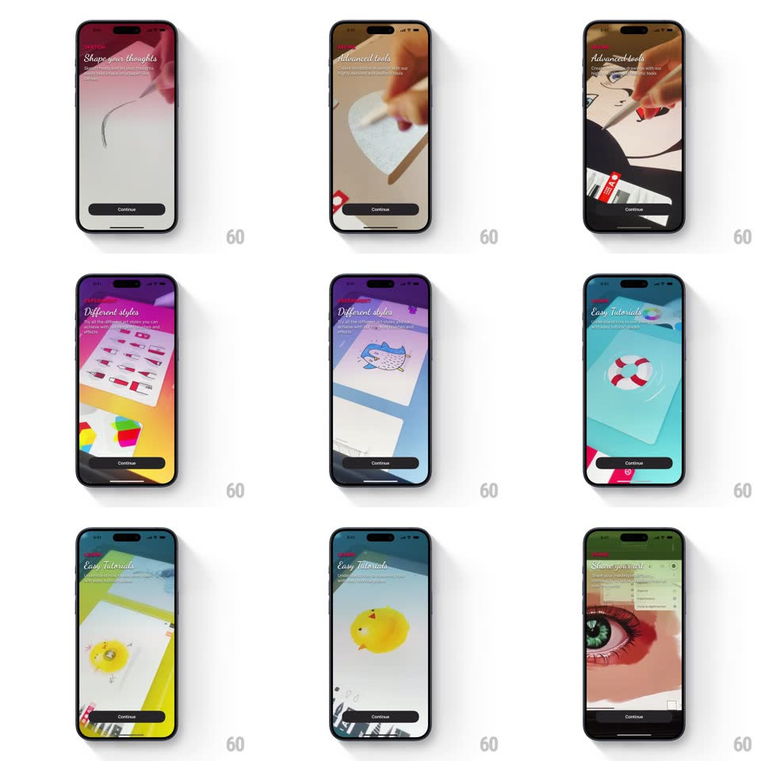

Media
Frame-by-frame

Rebuild this interaction 1:1: Tayasui Sketches' onboarding - a paged slideshow of full-bleed artwork cards ("Shape your thoughts", "Advanced tools", "Different styles", "Easy Tutorials", "Share your art") where each Continue tap slides the next richly colored card up over the last, headline crossfading, until a final Get Started.

Rebuild this interaction 1:1: Tayasui Sketches' onboarding - a paged slideshow of full-bleed artwork cards ("Shape your thoughts", "Advanced tools", "Different styles", "Easy Tutorials", "Share your art") where each Continue tap slides the next richly colored card up over the last, headline crossfading, until a final Get Started.
## Integration
Integration: stack-agnostic spec - springs given as stiffness/damping, timed motions as duration + curve; map every value to your framework and animation library of choice.
## Scene
Full-bleed illustrated cards, each a different vivid backdrop (pink sketchbook, warm beige pencil sketch, purple cartoon cards, teal tutorial scene, red share screen). Each has a serif italic headline + small subcopy top-left and a dark "Continue" pill pinned bottom-center.
## Motion spec
Pattern: stacked full-bleed card cascade.
- Tap Continue: the current card slides up and off (spring ~300/24) while the next card is revealed BENEATH it, already fully composed - a deck being dealt away, not pushed in.
- During the slide the incoming card scales up subtly (0.96 -> 1) and its headline rises 14px into place (300ms, ease-out) as the outgoing headline exits with its card.
- The Continue pill persists across all cards - same position, only its fill inverts per card brightness; on the last card it becomes "Get Started" with a 200ms label crossfade.
- Background artwork parallaxes lightly against the card motion (moves at 0.15x the slide speed).
## Calibration
- Each card's dominant color is completely different - the palette IS the progress indicator; no dots needed.
- The pill stays put so the user's thumb never moves; the content travels.
## Reduced motion
Cards crossfade; no parallax.
## Don't miss
- The next card is revealed UNDER the outgoing one - the layering order (incoming beneath) is the whole trick.
- Headline is a delicate italic serif against loud artwork - keep the contrast.